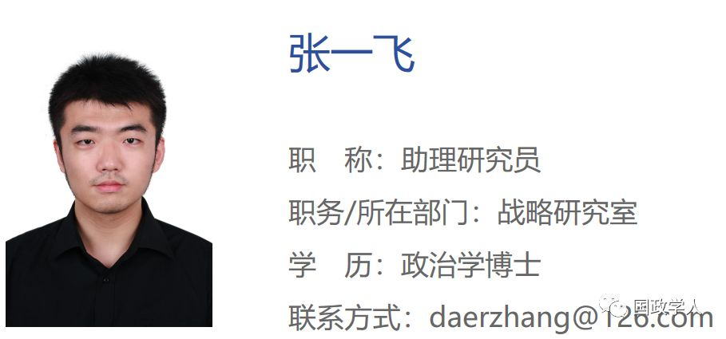
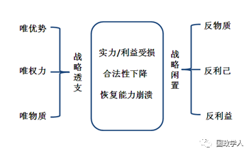
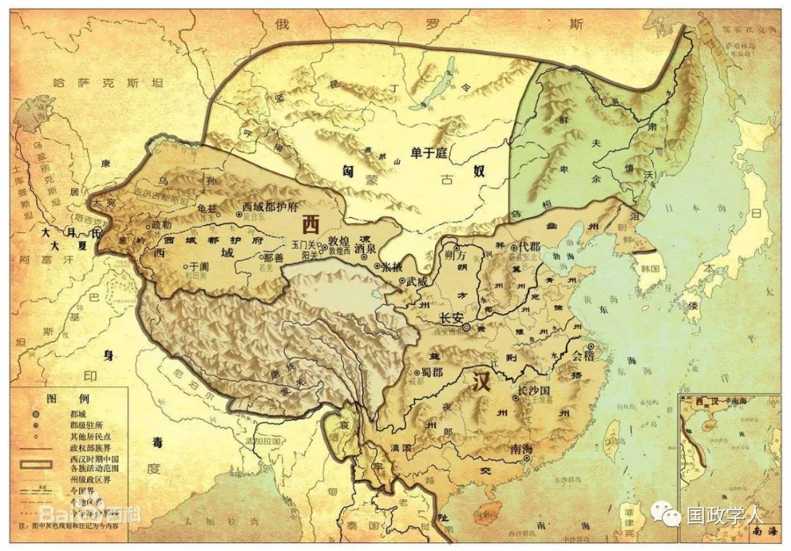
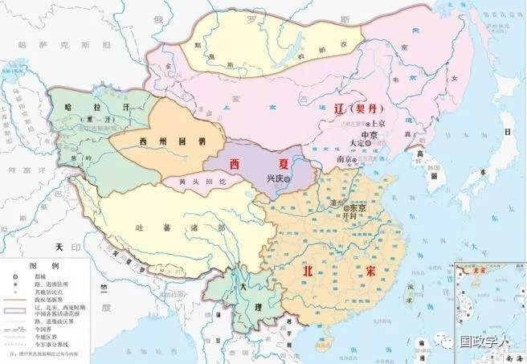
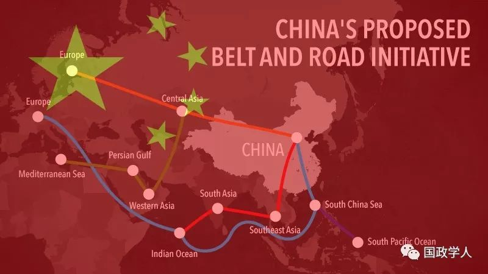

收录于合集

简 介
【作者】 张一飞，中国社会科学院美国研究所助理研究员
**【 编辑】**国政学人微信平台编辑首发
【来源】 《当代亚太》2019年第2期

内容提要
长期以来，对于中国战略文化的研究普遍被战争偏好与和平偏好的二元对立思维所限制。如何超越“战”“和”偏好，诠释更为准确的中国战略文化？这是文章要回答的核心问题。战略文化是特定社会背景下，战略主体在战略流程中长期稳定存在的思维模式。先秦诸子学说的群体对立性说明在中国文化身份形成之初，便同时出现了“战”与“和”两种系统性和重要性相当的战略思维。但是，这两种思维都未能在理论上系统而全面地压制对方，或在历史中持续而稳定地支配中国大战略。因此，它们只能被归为战略选项而非战略文化。通过抽象中国“战”“和”思维的共同特征，文章认为，中国战略文化是一种由“兼顾实力和道德的战略资源积累”，“被动反应式的战略资源使用”，以及“同质、适度的反应原则”构成的,呈现出“镜子”特征的思维模式。中国历史上与这一思维相符的大战略会因得到国内民众支持而最大程度地实现国家安全和经济发展；而偏离这一思维方式的大战略，则会受到不同程度国内失序的惩罚。对西汉和北宋的历史观察进一步验证了“（中国）大战略与‘镜子’思维的相符程度”和“国内发展有序性和可持续性程度”之间的因果联系，并详细说明了“镜子”思维在历史中的操作细节。文章还对当代中国坚持“镜子”思维的必然性与必要性进行了分析。
**关键词 ：**战略文化，“主战”，“主和”，“镜子”思维

正文
战略文化是国家战略自知的核心内容之一。迄今为止，学术界对于中国战略文化的研究结论存在巨大分歧：一些学者认为，中国战略文化以“战”为主，倾向于以武力维护利益，解决纷争；另一些学者则认为，中国战略文化以“和”为主，倾向于以关系维护、利益共建等方式弥合分歧。然而，战略文化虽然关乎“战”“和”偏好，却未必以仅以“战”“和”偏好为限。 是否可以单纯用“战”或“和”的大战略偏好覆盖并诠释中国战略文化？如果不可以，应该如何诠释之？这是本文所要回答的主要问题。
**1
**
战略文化与中国战略文化的研究现状
本文旨在对中国战略文化进行突破“战”“和”偏好限定的新诠释，因此，有必要考察传统“战”“和”框架下的研究成果，并重点思考两个问题： （1）以“战”“和”偏好诠释中国战略文化的两种研究结论是否已经实现了彼此证伪？（2）如果“战”“和”偏好无法诠释中国战略文化的全貌，应当如何梳理这两种思想体系，作为发现更为深刻的战略文化的材料基础？
（一）对于战略文化概念的研究
仅从字面理解，战略文化的外延应是国家最为宏观的大战略，其内涵则应是某种具有文化特征的相关概念。其中，大战略比单纯的军事战略更为宽泛，它打通了所有政策界限，是协调一个国家一切领域的所有力量以求实现某种政治目的的宏观方案；[1]而文化特征则决定了战略文化在较长时间内对大战略影响的稳定性。
对于战略文化最为系统的研究来自江忆恩（Alastair Iain Johnston）。他深入梳理了从20世纪70年代到90年之间三代学者对于战略文化的定义，并发现第一代研究者对战略文化的定义过于庞杂，导致战略文化因包罗万象而几乎无法被研究；第二代研究者对战略文化的定义没有区分符号性语言和真正对战略行为产生了影响的文化内容；而第三代研究者将文化作为一种情境变量，近乎苛刻地限制了文化的作用条件，严重削弱了文化作为一个独立变量的解释力。因此，江忆恩提出，“每一代群体在概念建构和研究方法上都有各自的缺陷”。[2]在此基础上，江忆恩将战略文化定义为“一套有机完整的符号系统”。[3]他认为，“战略文化的精髓或者实证参照物会以一组有限的、等级有序的大战略行为偏好形式出现”。[4]该定义同时满足了战略文化的可证伪性、可预测性、可比较性以及可追溯性。冯惠云把战略文化等同于“统治的哲学和军事思想”，[5]这明显没有超越江忆恩对第一代战略文化研究者的综述范畴。但是，他认为只有哲学与思想中的“独一无二之处”才可以被称为文化。因此，战略文化作为文化的一种在不同的国家和民族之间必须具有可分辨特征。这一定义借文化的独特性赋予了战略文化稳定性的特征。宫玉振将战略文化定义为“国家在运用战略手段实现国家战略目标的过程中所表现出来的持久的、相对稳定的价值取向与习惯性的行为模式”。[6]这种对战略文化的定义更加强调了其“持久性和稳定性”特征，部分满足了战略文化的可追溯性。
还有另外一些侧重文化特征的相关研究，基本没有超出江、冯、宫三位所提供的三种样式，即“大战略偏好样式”、“独特哲学样式”和“价值习惯样式”。罗斯塔·得里奥斯（Rosita Dellios）认为，传统文化与战略文化之间具有深刻联系，他把儒家和兵家思想传统的结合直接等同于中国的战略文化。[7]斯蒂芬·彼得·罗森（Stephen Peter Rosen）把战略文化定义为“可以被社会接受的关乎战和、攻防、张缩的共同信念与假设”，[8]这也是把战略文化置于历史传统和社会文化中加以理解的范例。于汝波将战略文化视为某种稳定的思想体系，并建立起了“传统文化—战略思维—战略行为”的“三位一体”关系系统。他认为，“中国古代统体思维把客观世界看成是一个统一的有机体，强调要从总体上、从纲领上、从基本规律上去认识和把握各种矛盾，表现出思维的全面性、统系性和循环性三个基本特征”。[9]李少军将战略文化视为一种长期发挥作用的传统，并将其定义为“一个民族或政治共同体的世界观、战争与和平观中带有长期性和根本性的理念”。[10]
取“大战略偏好样式”、“独特哲学样式”和“价值习惯样式”的最大公约数， 本文将战略文化定义为：在特定社会背景下，战略主体在战略流程中长期稳定存在的思维模式。 [11]
但是，也有一些学者并不将文化特征等同于稳定性特征。大卫·兰普顿（David M. Lampton）将战略文化作为政治文化的一部分看待，但同时认为政治文化取决于领导人的性格偏好。[12]这便在稳定的政治文化中增加了领导人性格这一不稳定变量。李晓燕同样认为，一国主流文化未必与战略文化呈现线性一致的关系，尤其反对中国学者对于一国战略文化与其主流文化的一致性，以及战略文化对国家行为的决定作用不加质疑。因为“文化涉及的领域比战略文化宽广，两者之间不可能是完全对等的关系”。[13]更为极端的态度来自张锋，他认为“大战略往往不是像清晰的政策或决策表现出来的那样，是理性算计的结果，相反，它通常发生在理性互动之前。不应该把战略冲动归入战略计算”。[14]这甚至间接地否定了战略文化的存在。
本文认为，上述定义已经混淆了“战略文化”与“战略表现”（或“战略情境”）的内涵。 对于战略文化的研究不应苛求战略主体的行为总是与其战略文化所预测的行为模式相符，因为某战略主体的战略文化为A，并不意味着该战略主体必然始终按照A来行事，而是意味着当其战略行为偏离A时，则会主动或被动地向A回归，这是对“长期稳定存在”的理性理解。
突破“战”与“和”的传统战略文化研究边界并不意味着彻底脱离“战”“和”问题讨论战略文化，而是要把“战”与“和”的思想体系放在正确的问题层次中加以研究。尽管前人的研究中也有试图突破“战”“和”框架对战略文化进行全新诠释的尝试，但这些研究或者完全脱离了“战”“和”问题，导致战略文化被扩大为政治文化，甚至文化本身；或者试图融合“战”与“和”两种思想体系，但无论是物理式还是化学式的融合，最后都只能无功而返，因为“战”与“和”在思想体系的内容方面针锋相对，无法进行有机结合，尤其不可能被融为一种静态的思想体系。本文突破战略文化传统内容边界的方式是明确“战”“和”思想体系在国家战略中的地位，并且在对战略文化的新诠释中解释这种地位的合理性，这既保证了问题研究仍在战略文化范围内，又对传统的战略文化内容框架实现了突破。
（二）对于中国战略文化的研究
江忆恩认为，中国战略文化的核心是备战文化，和解文化在大战略中只是符号性存在，而“符号性战略文化不会对战略选择产生影响”。[15]他取材《武经七书》，结合中国明代中期的大战略选择，论证了中国的战略文化主要反映在以备战范式主导的大战略偏好排序中。江忆恩还总结了这种备战文化范式假定：“冲突是人类事务的永恒特征；冲突主要是由于敌人的贪婪与险恶本性造成的；在这种零和背景下，使用暴力对付敌人是非常有效的。这些假定通常也会转化为一种战略偏好排序。其中，进攻战略最受青睐，其次是较低强制性的战略，而和解战略只是最后的选择。”[16]
与江忆恩的研究相呼应的理论探索来自克里斯多弗·特沃尼（Christopher P·Twomey）。他基本认可江忆恩的大战略偏好说，但也认为一种战略文化中未必包含一种主题，而且“不同的主题未必彼此冲突，也许多个主题在某一个具体问题上共同塑造了中国的行为”。[17]尽管他对江忆恩的研究方法和案例选择提出了少许质疑，但在描述中国战略文化的其他内容时，却充分暗示了中国的“主战”倾向，比如，“将自身置于有等级国际秩序的顶端”，[18]“在处理外交问题时使用强制手段”，[19]“使用武力先发制人”[20]等。
但是，大多数对于中国战略文化的研究都认为它是一种和平文化。冯惠云认为，孔子所强调的和平性是中华文明的根本存在方式。他指出，“孔子文化的影响深入教育体系、官员任命、官僚机构、管理原则、社会关系、军事事务，乃至国际关系”，[21]并认为与此相悖的存在方式在中华文明语境内难以想象。李蜀人走向了形而上学的哲学方向，他认为，主张和谐的儒家和道家的形而上思想是中国传统哲学的思想主流，这就为“主和”思想体系提供了相当程度的哲学基础，并为中国的战略价值观倾向正本清源。[22]此外，虽然宫玉振认为“儒家的追求与智慧并不构成中国战略文化的全部。相反，法家、道家、兵家、纵横家乃至墨家，都参与了中国战略文化的构成”，[23]但他仍然认为，“主和”的道德主义是中国战略文化的基本性格，并据此指出了泛道德主义给中国传统战略文化打上的烙印。[24]张锋也认为，“孔子文化中所包含的不同于功利主义理性的关系理性是东亚地区国际关系的主要特征之一”，[25]他同样以明朝为经验蓝本，观察了洪武和永乐年间明朝对朝鲜、日本和蒙古的大战略演变过程，基本论证了孔子文化（“主和”文化）至少和孙子文化（“主战”文化）同样真实存在且影响巨大。罗斯塔·得里奥斯指出，中国战略文化从历史传统中的继承多于从现代社会的汲取，而中国的历史传统又是以防御性和道德性为主要特征的。[26]李少军更是以“和合文化”概括了“主和”思想体系的内容，他认为，“‘和合’属于中华民族独特的伦理道德范畴……‘和合’概念就社会秩序而言的基本内涵就是认可世界的和谐本质，倡导以和平与合作的精神建构和睦的社会关系”。[27]
从学理角度讲， 这两派学者过程规范而结果迥异的研究成果已经在事实上完成了对彼此结论的相互证伪。择取某一学派，或者某一段中国历史对中国战略心理或历史全貌进行揣测的行为必然难以得其要领。 对于中国战略文化的研究有必要通过近距离观察中国语境下的“战”“和”思维，进而抽象出两种思维方式背后的共同习惯，如此才能超脱战略选项，发现中国大战略中更为深刻的、长期稳定存在的思维模式。
**2
**
对“战”“和”思维的近距离观察和“镜子”思维的发现
（一）对“战”“和”思维的近距离观察
一种战略思维至少要具备“行为依据”、“行为途径”与“行为目的”三个基本要素。如果一种战略思维可以被称为战略文化，其内容必须在这三个方面长期且全面地压制与之对立的思维模式。中国战略思维的源头产生于先秦诸子时期，“这一时期被称为百家争鸣，所有流派都在探讨如何终止无休止战争，如何提高统治者的战略水平，以及如何保护人民的生命安全”。[28] 后世中国战略思想的演变基本没有超出先秦时期的战略文化影响范畴，因为“在这个时期，中国的文化身份产生，这一身份贯穿了整个中国历史”。 [29] 从战略学角度而言，先秦诸子大体可以被归入“实力王国”和“道德王国”两个思想群体，且分别代表了“主战”和“主和”两种战略思维。 本文对这两种战略思维进行近距离观察，目的有二：一是证明这两种几乎同时诞生的战略思维的体系性和重要性相当，不存在压制与被压制的关系，因此，“战”与“和”都不应从学理层面被视为战略文化。二是通过详细考察这两种战略思维，为发现其背后的共同思维模式打下基础。
入围观察对象的先秦诸子学说必须至少满足三个条件：（1）关注战略议题而非人生议题（如治学态度、人生信仰等）；（2）与其他诸子学说产生过理论或实践中的交锋互动；（3）曾经在中国历史现实中产生过重大影响。同时满足以上三个入围条件的学者或政治人物被限于由九人组成的中国战略思想的创始人。[30]这九人包括实力王国的孙子、吴子、商鞅、鬼谷子、韩非子；以及道德王国的孔子、老子、孟子、墨子。
1.“以战为常”的“主战”思维
首先，实力王国的成员共同提出了“人性恶”的基本假定。 吴子认为，“凡兵之所起者有五：一曰争名，二曰争利，三曰积恶，四曰内乱，五曰因饥”。[31]所谓“兵之所起”就是战争出现的原因，即基于人性对于名、利、仇、位以及稀缺资源的争夺，它以人性中恶的稳定性界定了战争的不可避免性。商鞅认为，如果百姓没有法令约束就会放纵作乱，[32]如果让利益相同的人相互监督，就会相互掩蔽；[33]如果没有惩罚措施束缚，国民就会不停做坏事；[34]如果可以不为国作战就能获得赏赐，就不会有人为国作战……[35]这些观点都直接指向了人的劣根性，并且认为除了对抗性的严刑峻法，无可约束。韩非子更是对人性彻底绝望，他指出的“八奸”“五蠹”几乎把君王所有的亲近之人，以及社会上的各种角色都描述成了离开君权束缚便会犯上作乱的恶党；非唯如此，他对君主的人性同样缺乏信心。[36]孙子始终防范将领与士兵出现对抗性关系，他认为“吏弱卒强”，“吏强卒弱”，将领暴怒而不吝惜士兵生命，将领无威而士兵各行其是等现象都会在缺乏管制的情况下随时出现，[37]这暗示了人性在自然状态下的盲动。鬼谷子更是主张利用人性的弱点，如贪财、好色、爱名等，“往而极其欲”，“往而极其恶”，[38]进而展开游说。实力王国的假定核心不仅在于“人性是恶的”，更在于对于改变恶的人性没有信心，因此只能采取约束或消灭等对抗性方式严阵以待，并利用敌人的人性之恶展开物理或心理攻势。
其次，基于人性本恶，实力王国的核心实践在于提高实力积累的效率。 商鞅的实力积累方案最为系统，他认为，要使国家迅速强大，就要有效组织静态资源，使之以最高效率形成战力。[39]韩非子主要关注君权问题，从本质上讲，这仍是国家实力的积累方案，他强调，君权集中后，国家实力的迅速增长是水到渠成的。[40]吴子的国家实力积累方案类似于商鞅，他同样认为，优秀的实力组织方式可以反作用于实力的增长。[41]相较之下，孙子和鬼谷子的实力学说主要从反面防止实力过快消耗。孙子提出的实力积累方式是要防止过分消耗硬实力，他赞成“抓住时机，一击而中”的作战方式。[42]鬼谷子提出了十四种观察和掌握人心的方式，以及外交策士的九种培养方向，其目的也是减少硬实力消耗。实力王国的绝大部分成员都主张将国内社会结构变成战时机制，简化一切以提高国内积累实力的效率。
最后，“主战”思想的政治目的是建立“军争”型国际秩序。 军争秩序主要包括两层内涵：一是维持实力优势。在这一层次中，军争的内涵与西方现实主义颇为相通，即通过维持相对实力优势确保国家安全。孙子预判战争胜负的标准就是综合实力的相对优劣，他主张详细对比考察双方战争条件指标，并“由此而知胜负”。[43]鬼谷子提出的“忤合之道，己必自度才能智睿，量长短远近孰不如”，[44]所谓“孰不如”已经明确表示他所关注的是己方和敌方的相对实力差距，而非一方的绝对实力大小。商鞅的法治设计对于相对实力对比十分重视，主张根据相对实力的状态决定是否作战以及如何作战，“敌尽不如，击之勿疑”。[45]韩非子主要关注君主的集权问题，他要求君主相对于臣子以及其他周围亲密人员拥有绝对的权力优势。[46]吴子认真分析了六国相对于魏国的优势和劣势，为魏国提出了发扬“长板”，不在“短板”处与敌人作战的指导原则。[47]综上可见，在无政府国际结构的驱使下，相对实力优势取代关系伦理倾向，成为实力王国成员的核心关注点。
第二层内涵是完成兼并统治。实力王国的成员不认为身份认同可以被建立在价值观的吸引之上，相反，他们将物理性统一视为身份认同的现实保证。因此，在这一层次，“主战”思想比西方现实主义思想更进一步，它要解决的核心问题不是西方式的“平衡实力”，而是东方式的“克成一统”。因此，实力王国的征服是“征而并之”，而非仅仅是“攻而伐之”，这就决定了它需要在内部所做的实力准备必须更为坚实，内容也更为丰富，所以实力王国的成员不像西方现实主义学者那样直接从发展军力、制定战术入手，而是普遍采取了内部变法的方式作为“克成一统”的第一步。孙子在吴国变法，吴子在魏国、楚国变法，商鞅在秦国变法，韩非的法治思想也在他死后指导着秦国的二次变法。即使是最不似内向主义的鬼谷子也承认，无论对外战略如何成功，都只是为最后的实力决战做的外围铺垫，外交不可能是解决兼并问题的最后一步。[48]
2.“以和为贵”的“主和”思维
首先，道德王国成员共同提出了“人性善”的假定。
虽然只有孟子明确指出“人之有是四端也，尤其有四体也”，[49]但是，孔子、老子和墨子也都各自直接或间接认可这一假定。孔子的学说大部分属于“应然”式教导，[50]这些教导本身已经隐含了“人可以被教导向善（仁）”这一逻辑前提，孟子解释为“求则得之，舍则失之”。[51]老子所谓的“万物莫不尊道而贵德”比“求则得之”性善论中的“性善”的先验性更往前走了一步，把性善上升到了自然规律的高度。[52]墨子的性善论在老子的“自然性善论”和孔孟的“修身性善论”之间更倾向于孔孟一端，他提倡君主应为臣民做出兼爱非攻的表率作用，[53]可见他默认人（君主）可以修身且（臣民）可以被教化。无论是“自然性善论”的必然性还是“修身性善论”的可能性，都指向了“人性善”的基本假定。
其次，对道德实践的本质是对他者权利的承认和分享。 道德区间中从“不相干扰”（老子）到“有差别爱”（孔子）到“无差别爱”（墨子）再到“舍己为人”（孟子）的递进，本质上讲是承认和分享的权利由小到大的流动过程。“道德理由为接受传统道德实践惯例这一选择提供了正当性，为改良道德实践惯例或引入新的品行标准这一行为提供了正当性”。[54]一个国家要在对外授予权利的过程中减少阻碍，就必须先在国内治理中授予社会和国民足够的权利，提高政府合法性，这同时也是一种基于对人性的信心所开展的教育过程，它希望国民能够内化“善可生善”的逻辑。
最后，“主和”思想的政治目的并非一般意义上的安全和利益，而是建立“非攻”型国际秩序。 这种价值秩序也至少具有两层内涵：一是和平共处。这是“主和”思想的道德底线，武力效用是否低下根本不在道德王国成员关心的范畴内，因为在价值观上，他们无法接受如此剧烈的斗争方式；在功能上，他们认为武力的使用既不能从根本上恢复秩序，也不可能长时间维持秩序。
第二层内涵是互利关系。孔子、孟子和墨子的仁义兼爱，究其本质是对人际和国际关系的关注，因为所有长久的“爱”都必然发生在双边或多边关系之中。仁义、兼爱都反对“对独立个体的爱”，甚至将这种“自爱”理解为因“私”而产生的天下大乱的根源。他们认为，如果政治或者战略的着眼点是个体的“私利”、“私情”、“私欲”而不是“关系”，那么天下就会陷入“攻乎异端，斯害也已”，[55]“上下交征利而国危矣”，[56]甚至“国家残亡，身为刑戮”[57]等悲惨境地。相比之下，老子的视野更加广阔，他将天人视为一体，反对建立一系列干扰自然运行，致使国家争斗的人为规则，[58]这就把关系的重要性提升到了一个新的高度，将“道”和“器”融为一体。由于“道”本身没有冲突，因此，“器”内部的冲突也就没有存在的合理性。
表 “主战”与“主和”思维的系统性对比
|
起点（人性基础）
|
过程（实践途径）
|
终点（政治目的）
—|—|—|—
“主战”思想
|
人性恶
|
提高效率
|
军争（维持优势、兼并统治）
“主和”思想
|
人性善
|
授予权利
|
非攻（和平共处、互利关系）
**
（二）“镜子”思维的发现**
尽管实力王国与道德王国基于不同的人性观和实践方式所确立的政治目的不同，但是，它们的战略视野在由内转外的过程中，却存在极其类似的战略潜意识。
1.兼顾“德”“力”的战略资源积累
就获取战略资源的方式而言，两个王国的成员都倾向于使用内部积累而非外部掠夺的方式获得战略资源。
实力王国重点强调国内物质资源的迅速积累，但无论是集中权力，确立法度，还是练就精兵，统一民心，“主战”思想都以内部治理而非外部掠夺作为积累实力资源的出发点。道德王国重点强调国内道德习惯的养成和道德认可的内化。根据“互不相扰—仁爱—兼爱—舍己为人”的道德区间，“主和”思想更加强调道德的普适性以及家国天下的一体性。对于道德王国的成员而言，道德只存在“养成”的问题，而不存在“使用”的问题。因此，授予权利的实践过程首先是使国内民生得以改善，在国民广泛认可这种自身从中受益的实践之后，则不会对外向的权利授予产生排斥心理，也是道德王国成员普遍认可和追求的示范效应——通过被爱与爱人的良性互动，塑造一种深刻的价值认可。
由于两种战略思维等量、同时产生，中国战略文化在逻辑上没有动机刻意排斥某一种战略思维所推崇的战略资源。中国战略文化形成之初便出现了“战”“和”思维对立并存，其中既包括物质构成的实力资源，也包括认可构成的道德资源。偏执于任何一种战略资源的积累都既不符合中国战略文化形成的背景，也不符合中国面对多元战略对象而必须进行多种战略准备的历史现实。
2.被动的反应策略
在同时积累实力与道德两种战略资源的前提下，就使用战略资源的时机而言，战略主体有四种逻辑方案：主动单独使用某一种战略资源；主动同时使用两种战略资源；主动使用两种战略资源的某种固定排列组合形式；被动使用战略资源。但是，就中国战略思维的形成背景而言，前三种形式皆不成立。
（1）主动单独使用某一种战略资源与上述战略资源积累的内在逻辑相矛盾。 由于两种思想体系等量并存且同步积累，在缺少外部刺激的情况下，便没有主动选择并使用某一种战略资源的依据和动机；如果主动使用某一种战略资源的意识和动机存在，便不会同时积累两种战略资源，而这又与中国战略文化形成的现实背景相悖。因此，在缺少明确依据的情况下，无论战略主体选择哪一种战略资源主动行事，另一种战略资源所从属的战略思维都会通过国内民意的反对而对其进行掣肘。
（2）主动同时使用两种战略资源存在内容和操作层面的矛盾。 由于“战”“和”思想体系内容的对立性，无法严格对同一战略对象同时使用两种战略资源。一是因为实力资源与道德资源所从属的战略逻辑不同，实现利益与实现价值的政治目的在单位时间内往往相悖，战略规划容易陷入混乱；二是因为在操作层面，战略视野有限的执行人员之间容易因价值观和方法论的对立而形成巨大内耗，配合失灵，进而导致战略规划无法落实推进。对于两种战略资源而言，有意识地同时积累不等于可以在单位时间内同时主动使用，后者不具备可操作性。
（3）主动使用两种战略资源的某种固定排列组合形式与战略互动的规律相矛盾。 如果中国战略文化以某种实力与道德的排列组合为显性且固定的行为模式，则无法保证这种模式的长期性和稳定性。在战略互动中，不仅存在客观战术本身对于战略方向的影响，也存在战略主体之间在主观世界中的相互建构。战略主体无法保证实力资源的强制作用与道德资源的感化作用得以发挥的时间节点。且第一种情况中的逻辑困境仍然存在：缺少决定首先选择使用某种战略资源的依据与动机。
（4）排除主动使用战略资源的三种情况， 中国独特的战略资源储备格局决定了其使用只能以被动的方式呈现。 换言之，其使用战略资源的时机只能存在于外部刺激出现之后，这不仅给使用某种战略资源提供了合法性依据，也使战略主体的战略资源积累过程被迫停顿，转向战略资源的使用。
3.同质、适度的反应原则
（1）反应方式问题。在被动反应的前提下，战略主体有两种使用战略资源的策略：一是差异化策略，二是同质化策略。
差异化策略意味着对方“主和”则我方“主战”，对方“主战”则我方“主和”。这种策略不利于维护国内发展的有序性和可持续性，有悖于国家安全和经济发展的根本战略目的。如果对方“主和”，我方调动实力资源进行军争型战略操作，则有可能打击对方的“主和”热情，甚至激发对方的“主战”倾向，被迫自卫，使我方实力资源无谓消耗。如果对方“主战”，我方调动道德资源进行非攻型战略操作，则有可能更加激励对方的“主战”热情，甚至兼并野心，使我方陷入国际安全和国内合法性的双重险境。
同质化策略（tit for tat）意味着以和对和，以战对战。 这种策略既符合道德认知，也符合利益考量。从道德认知的角度看，这种“以牙还牙”策略是一种在各个历史阶段的连续表达，它不仅暗示“你如此对待别人，所以别人会如此对你”，而且以允许报复的方式在事实上制止了报复。[59]同时，它也符合对等、公平的社会规则，以及因果、往来的认知习惯。从利益考量的角度看，以牙还牙策略是进化博弈理论中推动“选择”与防范“突变”的重要因素，“选择是一种不断试错的过程，也是一种学习和模仿的过程，这个过程是适应性且是不断改进的”。[60]在这样多次重复博弈的战略互动中，“以牙还牙赢得竞赛不是靠打击对方，而是靠从对方引出使双方有好处的行为，坚持引出使双方有利的结果”。[61]
（2）反应的程度问题。 在“主战”或“主和”的战略操作过程中，战略主体必须明确反应的程度边界以避免过多消耗实力或道德资源。 因为无论军争秩序还是非攻秩序，“秩序”本身是它们共同的目的，不以牺牲“秩序”来实现军争或非攻是不言而喻的铁则。在实现国家安全和经济发展的战略目的之后，避免主战逻辑导致战略透支以及主和逻辑导致战略闲置，是秩序得以建立的题中之义。
至此，中国语境下“战”与“和”两种战略思维共建或共享的思维模式得以呈现——在无政府状态下，战略主体同时积累实力和道德两种战略资源；其他战略主体的“主战”或“主和”行为是战略主体调动战略资源进行战略“反应”的依据；在使用同质战略资源进行反应的过程中，要对“反应”程度进行控制，以保证国内发展的有序性和可持续性。 这种“全面积累—被动反应—同质适度”的思维模式与镜像反射颇为相似，因此，可将这种体现中国战略文化所依托的思维模式称为“镜子”思维。
（三）战略文化的惩罚作用
战略文化是战略主体稳定的思维模式，因此，从战略主体的历史中任意截取一段进行观察，应该都能够观察到这种模式的存在，或者与此模式相悖的行为受到惩罚。 在“全面积累—被动反应—同质适度”的战略模式中，与“镜子”思维相悖的情况包括：失衡的战略资源积累；主动的战略资源使用；异质或过度的战略反应。对于这三种背离情况，中国战略文化通常会以国内失序的方式对战略主体进行惩罚。
1．“主战”思维的战略透支陷阱
如果中国偏执于积累实力资源而忽视道德资源，片面追求经济乃至军事优势，就会踏入“唯优势”主义陷阱。“唯优势”主义的受害妄想通常会使国家在客观安全的情况下继续追求经济、军事优势以维持安全感，造成资源浪费和民生受损。
如果中国主动使用实力资源追求实现军争秩序，以追求激情为目的主动使用实力资源，进而在不断验证其权力有效性的过程中使实力积累消耗殆尽，则会踏入“唯权力”主义陷阱。物质实力的使用即为权力产生的过程，而可以强迫他国“为其所不愿为”的权力运用则是满足激情的最佳方式。伴随着激情快感而来的是对失去满足激情能力的巨大恐惧，这种恐惧会促使战略主体不断使用权力，来向自己证明其权力依然有效。
如果中国对于外来实力刺激反应过度，在无限统一国内一切指标的基础上，进行过度的军事反击，则会踏入“唯物质”主义陷阱。实力来自统一，而统一的方向是物质实力，“唯物质”主义会倾向于取缔物质实力以外的其他国家发展衡量指标。“军力至上，不论其余”是“唯物质”主义的集中体现。
2．“主和”思维的战略闲置陷阱
如果中国偏执于积累道德资源而忽视实力资源，片面强调道德感化和过程正义，则会踏入“反物质”主义陷阱。“反物质”主义从本质上讲是对物质力量强制作用的否认。“主和”思维认为人心可以也应该被改良，若这种认知走向极端状态，则会得出“仁者无敌”式的草率结论。
如果中国主动使用道德资源追求实现非攻秩序，过度进行无回报或低回报的利益输出，则会踏入“反利己”主义陷阱。在此状态下，国家会主动寻求利益输出，开展“利他”战略。“主动利他且反对利己”会在客观上造成人我之间此消彼长式的实力差距扩大，这会在很大程度上降低“主和”思想实现其政治目的的可能性，甚至会刺激他国的军争思维。
如果中国对于外来道德刺激反应过度，陷入道德性自我陶醉，在战略反应中将价值实现置于利益实现之前，则会踏入“反利益”主义陷阱。在“亦曰仁义而已矣，何必曰利”[62]的思维方式下，国家战略设计之初，其目的便是在理念中追求价值目标。既然没有对利益（尤其是相对收益）的刻意追求，便也没有对利益损失的戒备怨愤，这将会造成对战略执行中利益损失的麻木。
3.战略文化的惩罚方式
战略透支和战略闲置是破坏国内秩序的两种形式，它们都会因违背国人潜意识中的稳定思维模式而受到来自战略文化的惩罚。这种惩罚作用分为三个阶段导致国家陷入不可逆的失序状态：
第一阶段是国家实力和利益严重受损。 在战略透支下，国家无限制地以统一的方式实现高效实力积累，并对外使用实力，极易出现入不敷出，甚至穷兵黩武等阶段性不良反应。而在战略闲置下，国家轻视物质，淡化利益，甚至主动贡献他国（选择权或实际利益），以求满足价值观标准，这也会使国家利益流失，民心不附。
第二阶段是政府合法性下降。 随着实力和利益损失的增加，如果没有战略调整，国内社会对于中央政府的不满和质疑会日益上升。在战略透支下，政府和社会严重的对立关系起自决策层对民间资源的剥削式压榨，无限合并与统一各类标准势必要牺牲社会个体的诸多福利，物质实力积累的效率无限提高也就意味着国民的反抗倾向无限上升。而在战略闲置下，国人通常无法忍受决策层任意挥霍国家利益，国家从“互不相扰”到“舍己为人”的道德区间其实也是利益损从小到大的区间。而“在危机程度最深刻的时候，对于决策者或者决策集团而言，最迫切需要合法性声誉稳定大众，其他声誉不再有任何实际作用”。[63]
第三阶段是国家发展潜力和恢复能力崩溃。 无论是出于战略透支还是战略闲置，如果其内忧外困的状态在时间上长期持续，则会伤及国家元气，使其恢复实力与合法性的能力逐渐丧失。在战略文化的惩罚作用下，最坏的情况并非问题恶化，而是丧失了解决问题的能力，只能任其加速滑向国家失序和战略失败。
 图1 战略文化惩罚机制示意图
此处需要强调五点： 第一，战略资源积累和使用的主体只能是中央政府，而不是所有国内成员。 “只有中央政府才能代表国家意志，而其他公共权威以及地方政府是无法代表国家意志和国家利益的。”[64]因此，以中央政府为战略主体，则战略对象既包括国外权力中心，也包括国内民众。
第二，“镜子”思维是中国的战略文化并不等于中国历史上的战略行为始终符合这一思维模式，而是强调如果战略主体的战略行为与此思维相悖，则难以实现战略目的，乃至因失去民心而遭到惩罚。 正如“大一统”是中国历史发展的主流趋势，并不等于中国历史上没有分裂时期，而是说如果中国分裂，则民心会期待国家的再次统一，而这种稳定期待又会影响决策者的目标制定与战略手段。因此，决策者或者决策集团固然可以背离“镜子”思维，在一定程度上为所欲为，但也必然要为此付出代价。
第三，符合“镜子”思维的行动并不是实现中国大战略目标的决定变量，而是积极变量。 “符合本国战略文化”的行为对于实现战略目标未必“有效”，却大体“有益”，“符合本国战略文化”的行为能更多地减少行动摩擦，使其他原因作用下未必甚好的结果不至于更坏。但不符合“镜子”思维的行为却一定会导致“无效”。正如新现实主义认为的，即使一个国家注重国际格局的权力均衡，未必一定能够维护国家的外部安全；但是如果不注重，甚至有意破坏国际权力均衡，则必然会将本国置于某种危险境地。
第四，在缺少外部刺激的情况下，“镜子”思维要求国家持续积累战略资源，这不能被等同于战略闲置。 因为在全面积累战略资源的过程中，国家未必会出现战略闲置所必备的对客观对抗性形势丧失认知能力或认知意愿，也未必出现主动让利。中国历史上多次进行过“韬光养晦”，但这并不等于贯穿于战略资源积累和使用的战略闲置。
第五，授予国民权利，使民间经济得以恢复不能等同于国家实力资源的积累。 宽刑薄赋使财富聚于民间而非政府，如果中央政府要从民间汲取和使用财富，则需要通过“主战”思维中提高物质实力积累效率的各种政策杠杆实现，而一旦开始使用这些政策杠杆，则变予为取，变“主和”思维的道德逻辑为“主战”思维的实力逻辑。即使授予权利的方式有助于国内财富的增长，也仅仅属于道德思维的附加效果，且不必然等于中央政府实力资源的增加（甚至持续减免赋税），至少不必然等于中央政府使用实力资源能力的上升。
**3
**
** 案例研究：西汉与北宋的诠释研究**
（一）假设的提出与案例选择
上文已经在本质上提出了关于中国战略文化的两点假设。 假设一是：符合“镜子”思维的战略行为会得到国内的支持，表现为战略主体可以最大程度地维护（而非必然实现）国内发展的有序性和可持续性；假设二是：偏离“镜子”思维的战略行为会丧失国内支持，表现为一定时间内，战略主体必然丧失国家发展的有序性和可持续性。本文对于中国战略文化的新诠释建立起了“与‘镜子’思维的相符程度”这一自变量与“国内发展的有序性和可持续性程度”这一因变量之间的因果关系假设。
案例研究的目的是通过验证上述假设，验证“镜子”思维是否，以及如何作用于中国战略操作。下文将以西汉和北宋作为案例对“镜子”思维的存在和作用方式进行验证和说明。西汉和北宋“战”“和”更迭频繁，国力相差悬殊，时间相距遥远，是符合本文观察目的的优质样本。

（二）案例一：大一统的西汉
西汉王朝的十二位最高统治者共走过七个完整的战略循环，其中与“镜子”思维相符的时期，西汉呈现出了有序、发展的状态；反之，则依次出现了国内失序的三个阶段。
1. 汉高祖立国
（1）兼顾德力的战略资源积累。 在平定中原地区之后，根据“主和”逻辑，高祖致力于授予国民各类政治、经济权利；[65]甚至持续改革货币制度，实行“令民铸钱”。[66]但与此同时，根据“主战”逻辑，高祖致力于集中权力（这是中央政府提高物质资源积累效率的前提，也是“主战”逻辑中法家思想的核心），坚决立法、护法，[67]削弱外臣权力。[68]
（2）对匈奴的同质、适度反击。 高祖时期并未出现主动对外使用实力或道德资源的现象，但出现了对匈奴骚扰的反击行动。“秋九月，匈奴围韩王信于马邑，信降匈奴”，韩王信部将收拢散兵，并“与匈奴共距汉”。[69]但在匈奴威胁解除之后，高祖随即中止反应，并未深入追击。[70]汉朝政权在“镜子”思维中得以巩固。
2. 汉惠帝及吕后专政时期的“软骨”政治
（1）以德为主的战略资源积累。 惠帝即位后大范围免除民间刑罚，减免田租，大赦天下，赏赐民爵。[71]这些措施对于增强民间的道德认同与提高政府威信大有裨益。但其勇于“授予权利”的行政风格也激发了吕后对于最高权力的觊觎和争夺。[72]但是，吕后主政之后延续了这种道德逻辑主导的国家大战略，赏赐民爵，大赦天下，对吕姓外戚大量封侯。[73]这不仅刺激了国内分裂势力的膨胀，乃至出现了“南粤王尉佗自称南武帝”[74]之类的严重后果。“地方叛乱可以被视为对中央权威的直接否认。”[75]
（2）反应错位与战略闲置。 惠帝和吕后时期是匈奴入侵开始活跃的时期，匈奴接连入侵，甚至给吕后写信，称“两主不乐，无以自虞，愿以所有，易其所无”，[76]这种行为是对汉朝十分严重的侮辱。汉朝不仅没有反击，吕后甚至回书，称“年老气衰，发齿堕落，行步失度，单于过听，不足以自污”，[77]进而献马和亲。[78]惠帝和吕后时期的对匈奴的反应不仅进一步刺激了匈奴在后来对汉朝进行了更大规模的入侵，而且刺激其他地区也出现了不同程度的动乱。[79]
3. 汉文帝时期向“镜子”思维的回归
（1）兼顾德力的战略资源积累。 文帝即位的过程也是按照实力逻辑回收国家权力的过程。一是解除诸吕官职；二是平定地方叛乱；三是分封心腹之人为新诸侯；[80]四是分裂旧诸侯势力。[81]这些加强中央权力的措施是提高权力积累效率的前提。与此同时，文帝并没有忽视积累道德资源：在经济方面，他建立了老年人福利保障制度。[82]在政治方面，他广开言路，下令“自今以来，有犯此者勿听治”。[83]这些授予权利的措施使汉朝在吕后之乱后很快实现了“海内殷富，怀于礼义”的大治局面。
（2）被动且适度的对匈反击。 在战略资源恢复平衡积累模式的背景下，文帝不存在主动对外使用战略资源的行为。在匈奴入侵北地时，文帝既没有放任匈奴寇掠而走，也没有过度反击，而是在匈奴撤军后驻军防守。[84]而当匈奴和亲时，文帝“俱弃细过”，[85]以德报德。然而，即使是和亲之后，匈奴侵入上郡和云中时，文帝毫不手软地派遣六路大军防守反击。[86]这些战略行动表现出了相当明显的同质反应和自我控制特征，“文景之治”从此开始。
4. 汉景帝时期的“无为”与衰退
（1）兼顾德力的战略资源积累。 景帝大体继承了文帝“加强集权、与民生息”的内政思路。在加强集权方面，景帝削弱诸侯权力，坚决消灭敢于反抗的七国诸侯，[87]更换太子，防止外戚干政。[88]在与民生息方面，景帝在灾年宽赦天下，减免田租。[89]同时，明确法令度量，严惩官吏贿赂枉法，确保民间司法正义。[90]这是在文帝授予国民言论权利的基础上更进一步的权利授予——通过整肃吏治使民得益。
（2）主动使用道德资源与反应缺失。 景帝存在主动使用道德资源的情况，在没有外部刺激的情况下，多次主动与匈奴和亲，大大刺激了匈奴的军争野心，随后即多次入侵边境，[91]这完全符合“镜子”思维否定主动使用战略资源的原理。而在匈奴主动进犯的情况下，景帝出现了反应缺位，除个别将军自发抵抗，基本都采取了等待匈奴自退的方式应对。[92]这种反应缺位与“镜子”思维的反应模式明显不符，是一种变相的“反利益”主义，匈奴对汉朝的威胁持续上升。
5. 汉武帝时期的“秦政”
（1）以力为主的战略资源积累。 终武帝一朝，实力资源始终是国家战略资源积累的主要方向。武帝实行了“罢黜百家，独尊儒术”的思想统一；[93]“行半两钱”，[94]推行货币统一；继而颁布“推恩令”，削弱诸侯权力，[95]实现全国政令统一。民间财富开始源源不断供给中央，国家实力资源积累达到了前所未有的高度。但纵观武帝一朝，绝少出台与民政治权利之类的政策措施。[96]
（2）过度反击与战略透支。 尽管武帝一朝的资源积累出现了矫枉过正的情况，却始终坚持被动反应，这是为诸多相关研究所忽略的一点。[97]但在历次反击中，汉朝大都出现了过度反击的问题。武帝一直本着“彻底灭亡匈奴”而不是“解除即时威胁”的思路运筹战略。他经常在可以依靠地方军备抵御匈奴的情况下调动大军出击，甚至在边境基本安全的情况下持续大规模反击。[98]在此过程中，对于一些可以安抚的西域国家（比如大宛）也经常使用武力手段加以胁迫。[99]同时，武帝近乎涸泽而渔地集中国内实力资源，导致民生凋敝，国家财政甚至出现了不得不通过破坏司法保持运转的地步。[100]
6. 汉昭帝与汉宣帝时期的战略修复
（1）兼顾德力的战略资源积累。 昭帝主要在霍光、桑弘羊等重臣辅政之下治国，开始改变武帝时期以实力资源积累为主的“秦政”。昭帝大量免除农民田租、刑罚并大赦天下；奖励“行义”的百姓和官员。[101]同时，诛杀试图谋反的长公主、燕王旦、上官桀、桑弘羊等。[102]宣帝时期的战略资源积累模式与昭帝时期类似，减免租税更为频繁，灾年免除租赋成为常例，出台多项政策打击土地兼并，甚至把国家苑囿借给贫民耕种。[103]但楚王试图谋反夺权，则坚决镇压。[104]汉朝中央政府合法性稳步提高，权力稳定，经济复苏，史称“昭宣中兴”。
（2）被动且适度的对外反应。 昭帝时期，“匈奴入朔方，杀略吏民”，汉朝“发军屯西河，左将军桀行北边”，[105]在确保安全的情况下，汉朝没有如武帝一般举全国之力反击。“冬，辽东乌桓反”，汉朝也只是“以中郎将范明友为度辽将军，将北边七郡郡两千骑击之”而已。[106]宣帝时期则分别调动两种战略资源应对同质的外来刺激。在“匈奴数侵边，又西伐乌孙”的情况下，汉朝派兵保护乌孙，击败匈奴，随后即主动退兵，且免除郡国租赋。[107]但在“匈奴呼遬累单于帅众来降”的情况下，汉朝不仅对降者封侯，而且“置西河、北地属国以处匈奴降者”。[108]这种“以德报德，以直报怨”的反应策略使汉朝在不示软弱的情况下激励了匈奴更多的友好行为。[109]
7. 汉元帝之后的实力流散与西汉覆灭
（1）以德为主的战略资源积累。 从元帝即位到王莽篡汉之前，汉朝四代皇帝无一例外进行了片面授予权利的战略资源积累。汉朝的内政模式陷入了“纯德教”的“周政”状态，最终也和周朝一样在中央权力沦丧中灭亡。
元帝继位之后过分宽仁，中央政府权力迅速分散，并由此产生了两个严重后果：一是宦官开始干政，[110]二是地方权力坐大。[111]成帝继位后更进一步加强德政，使得中央权力又从宦官转移至外戚手中，[112]这是后来王莽得以篡权成功的先决条件之一。哀帝在位时期较短，但是，政府合法性开始在民间下降，“关东民传行西王母筹，经历郡国，西入关至京师”，[113]政府已经无能为力。平帝九岁登基，“大司马莽秉政，百官总己以听于莽”，[114]改朝换代已成定局。哀、平两朝汉室在地方和中央的合法性均已荡然无存，国内失序进入不可逆期。及至王莽篡位，汉朝战略恢复能力崩溃，其大战略失败与王朝覆灭同步进行。
（2）尽管在战略资源积累中，西汉的最后四代皇帝因失衡于德而导致雪崩式的权力失控，但在汉宣帝基本解决匈奴问题之后，西汉基本没有出现过其前半程所面对的外部刺激。
表2 西汉大战略评估示意表
|
兼顾德力的战略资源积累
|
被动的反应策略
|
同质、适度的反应操作
|
战略效果
—|—|—|—|—
汉高祖
|
√
|
√
|
√
|
稳定立国
汉惠帝、吕后
|
×
|
×
|
×
|
战略闲置，
边患日重
汉文帝
|
√
|
√
|
√
|
“文景之治”开始
汉景帝
|
√
|
×
|
×
|
战略闲置，
“文景之治”结束
汉武帝
|
×
|
√
|
×
|
战略透支，
统治危机严重
汉昭帝、汉宣帝
|
√
|
√
|
√
|
“昭宣中兴”
汉元帝、汉成帝、汉哀帝、汉平帝
|
×
|
×
|
√
|
战略闲置，
西汉灭亡

（三）案例二：准分裂时期的北宋
北宋王朝的十位最高统治者共走过六个完整的战略循环，其中，历代最高统治者几乎都没有按照“镜子”思维行事的战略行为，国家始终徘徊在国内失序的前两个阶段。北宋之所以可以延续百余年，一是因为“宋帝国的力量在唐朝正式结束以前就已牢牢打下了政治和军事基础”；[115]二是因为战略摆荡幅度较大，使国民对中央政府战略调整的效果抱有一定幻想。
1.宋太祖与宋太宗时期的严重战略透支
（1）以力为主的战略资源积累。 太祖创建制度的基本思路是强化中央集权以提高国家实力积累效率。太祖由远及近收回所有兵权，将地方节度使权力削减至仅能维持地方运转的最低限度，且设参政知事、枢密使、三司使将宰相权力一分为三。他还在地方设转运使，将地方财政转入中央。以此为开端，宋朝在政治和经济上都形成了“强干弱枝”、“权在中央”的国内权力格局。[116]太宗即位后执行了与太祖时期相仿的内政方针，先是在即位后迅速剪除太祖后人，稳固朝局。[117]而后大大完善了科举制度，“不但增加科举录取名额，而且对被录取者从优授官，升迁迅速”。[118]他还在边地战乱频繁的地区推行营田和屯田，最大效率地使用士兵作为农业劳动力，部分解决了前线军需。[119]
（2）主动使用实力资源。 宋朝前两任皇帝都致力于主动使用军事手段削平南方割据政权，[120]在此过程中，基本没有采用任何道德感化甚至谈判方式。在进攻北汉的过程中，太祖遭遇了同样秉承“主战”逻辑的辽国，损失惨重。[121]这种“唯权力”主义的拉锯战大量消耗了宋朝自后周以来积累的实力资源，期间释放出的谈判信号也只是权宜之计。[122]至太宗时期，对实力资源的主动使用达到高潮。太宗多次主动征讨这些地区试图实现兼并。[123]甚至在辽主动求和的情况下，太宗回答“河东逆命，所当问罪，若北朝不援，和约如旧，不然则战”，[124]于是战火再起，此后太宗不间断地多次进攻契丹。[125]
太祖和太宗在“唯优势”主义与“唯权力”主义的支配下使宋朝陷入了严重的战略透支。一是战场上败多胜少，物质损失惨重；[126]二是中央政府合法性地位下降，受到来自军中、民间和属国的三重挑战。[127]
2. 宋真宗时期的“矫枉过正”
（1）以德主的战略资源积累。 尽管真宗没有过多改变前代皇帝留下的制度，但他已经开始注重以授予权利取代提高效率。真宗不仅大量免除债务和赋税，赠送民间大量财物和粮食，而且对外与多国建立友好关系。[128]但是，真宗忽视了当时事实上已经十分恶劣的周边环境，主动裁减兵员，[129]致使军队战力下降，这就使国家在“反物质”主义作用下蒙受了新一轮实力和利益损失。尤其西夏不断骚扰边境，战事频起，灵州、凉州等大片国土在很短的时间内沦陷。[130]
（2）过度的战略反馈。 尽管真宗时期宋朝的大部分作战均属边境自卫反击，[131]但对西夏和辽进行反应中，都出现了过度现象。西夏在长期作战后经济崩溃，向宋臣服，真宗对西夏进行了除封赏以外的长期经济反馈；[132]而西夏却拒绝了宋朝提出的实质性政治要求，宋竟然妥协。[133]与此情况类似，在对辽反击占有优势的战场局势下，辽主动提出议和，“宋真宗求和心切，向曹利用表示虽每年输送给辽银、绢总数百万亦可……双方订立和议，规定宋每年交给辽绢二十万、银十万两”。[134]《澶渊之盟》就是宋朝在这种以小报大，甚至以德报怨的“反利益”主义思想主导下签订的。
真宗时期的战略闲置不仅出现了中央政府合法性的下降，[135]而且也激发了外部强敌进一步的觊觎野心。[136]
3.宋仁宗以降三代统治者的战略透支
（1）以提高实力积累效率为主题的国内改革。 仁宗、英宗和神宗的内部改革都是在中央集权未受挑战的情况下，直接针对提高中央政府从民间汲取财富效率进行制度创新。在边境稍定后，仁宗开始启动以提高实力积累效率为目标的“庆历新政”。新政领袖范仲淹主要推行“明黜陟、抑侥幸、精贡举、择官长、均公田、厚农桑、修武备、推恩信、重命令、减徭役”等十项措施。[137]英宗在位仅五年，未及大有作为。尽管如此，英宗还是采取了一系列加强西北军备的措施，比如恢复武举；从陕西民户中征兵甚至达到三丁抽一的比例。[138]神宗更是笃信实力至上的“大有为”之君。他认为宋朝最大的问题并非战略透支，而是“不为之设官，以修其水土之利”，“兵士杂于疲老，未尝申斥训练”，“其于理财，大抵无法”。[139]于是，他启用王安石等锐意进取的新大臣推行以提高实力积累效率为目的的全国性改革，陆续颁行军争主义新法。[140]
（2）对“镜子”思维反应模式不同方式和程度的偏离。 仁宗对西夏进行了过度反击。尽管西夏李元昊率先进攻宋朝，在庆历元年和庆历二年大规模发动侵略战争，[141]但在后来的战争中，李元昊陷入两面作战，于是多次遣使议和。在此情况下，西夏的和平请求都被宋朝拒绝。[142]英宗在位时间过短，但是在外交方面却有主动使用实力资源的迹象。在西夏称臣的情况下，英宗主动遣使谴责西夏多次对宋违约用兵。[143]神宗即位后，开始主动使用军事力量，“西夏财政与兵力交困，于是秉常乃遣人至延州同宋朝议和，再次提出以塞门、安远二砦换绥州，遭到宋神宗拒绝”。[144]
北宋中期三代皇帝的改革使宋朝陷入了开国以来最为严重的一次战略透支。一是实力受损远超前代，[145]二是国家长期积贫积弱与改革动荡使中央政府合法性受到重大打击，国民、军人和地方豪强对于中央政府的执政能力普遍产生了怀疑态度。[146]宋朝再次走向国内失序不可逆期的边缘。
4. 高太后时期的战略闲置
（1）废除提高实力积累效率的新法内容。 神宗去世后，高太后开始支持保守派废除以“提高效率”实现“国富兵强”的新法措施。在此期间，免役法、保甲法、方田均税法、市易法、保马法、募役法、将兵法、青苗法相继或被废除，或被改造，[147]变实力追求为道德追求。国内阶级矛盾得以缓和，高太后也因此被称为“女中尧舜”。但是，高太后治下的宋朝只是改变了以实力主导的战略资源积累，却没有拿出德力兼顾的新方案。
（2）主动使用道德资源。 高太后的对外战略中出现了主动授予权利的相关实践。为了与西夏停战，高太后和一些保守派大臣主动将米脂、浮图、葭芦和安疆四寨割让给西夏，与之修好。虽然很多朝中大臣坚决表示反对，但是最终难以改变高太后的战略决策。[148]这种在相持状态下对西夏主动割让土地的行为意味着“唯权力”主义被纠正，但是也出现了“反物质”主义和“反利己”主义的征兆。
5.宋哲宗时期的战略透支
（1）以力主的战略资源积累。 哲宗甫一即位，便开始恢复以提高实力积累效率的一系列新法。“是岁，以常平、免役、农田水利、保甲，类著其法，总为一书，名《常平免役敕令》，颁之天下”，[149]并且连“教育、科举方面也恢复了神宗时的制度”。[150]
（2）主动使用实力资源。 哲宗对于割地西夏深恶痛绝，产生了以实力恢复国土的愿景。哲宗不仅停止了以授予权利交好西夏的战略，甚至还禁止了仁宗时期开放的对夏民间贸易。[151]这一时期，宋夏交战十分频繁。[152]仅绍圣三年的六七月间，宋军便十四次击退西夏军。[153]同时，哲宗战略中的“唯权力”主义加剧了这种对抗，甚至在西夏因太后去世主动告哀并谢罪的情况下，哲宗仍然拒绝和议，继续主动进攻。[154]
至此，宋朝战略透支再次出现。哲宗执政时期较短（七年），其间出现的国内失序主要表现在实力消耗巨大。早在哲宗继位的前三年，宋朝君臣便开始在西北采取“筑寨缓进”战略，但是事实证明该战略并无用处，在西夏骑兵的进攻下，仅永乐之战中，宋方将士役夫死者即超过十万人。[155]哲宗时期，“宋军又在延边地区修筑了平夏、灵平等数十个堡寨”，甚至按照“半山半川”的模式将堡垒连成一片，[156]其实力消耗可想而知。
6. 宋徽宗乱政与宋钦宗亡国
（1）“涸泽而渔”地提高实力积累效率。 徽宗疯狂收敛民间财富，加设田租，造成百姓流离失所，土地荒芜。尤其是“花石纲”等项目，“一切都无偿地取用与民户，以致地不得耕，农户有饿死、自杀，家破人亡”。[157]同样是提高实力积累速度，但是徽宗没有确立“先富民，后取财”的正常方案，而是采取了野蛮争敛的方式巧取豪夺，宋朝从仁宗开始的富民政策被亡民政策取代。
（2）主动挥霍实力资源。 在辽面临金的严重威胁时，马植向宋提出“联金灭辽”，徽宗派人渡海至辽东与金国结盟，并且“约定金攻辽中京等地，宋攻燕京，辽亡后，燕云归宋，宋将原给辽的岁币给金等，史称‘海上之盟’”。[158]与此同时，还多次讨伐西夏，向西拓边。[159]
徽宗在激情驱动下热衷于建立的军争秩序成为“压死骆驼的最后一根稻草”。一是宋朝实力资源被皇室娱乐与对外作战消耗殆尽。二是对于实力资源的横征暴敛与肆意挥霍导致宋朝中央政府合法性濒临破产。宋江、方腊等农民起义此起彼伏。在对金作战失败后，宋朝丧失了山西、河北等大片国土，军心涣散，民怨鼎沸，宋朝在一定时间内丧失了战略调整的实力与能力，国内失序陷入了不可逆状态。徽宗却在此情况下将皇位传给钦宗。因此，钦宗时期的大战略在事实上已经不具备考察意义。在宋朝丧失战略恢复能力之后，宋钦宗放弃了以实力改变局面的努力，竭力求和，不但罢免主战派核心人物李纲，而且主动向金进行投降式的乞和，[160]但仍不免亡国的命运。
表3 北宋大战略评估示意表
|
兼顾德力的战略资源积累
|
被动的反应策略
|
同质、适度的反应操作
|
战略效果
—|—|—|—|—
宋太祖、宋太宗
|
×
|
×
|
×
|
战略透支，
国力大损
宋真宗
|
×
|
√
|
×
|
战略闲置，
贡献岁币
宋仁宗、宋英宗、宋神宗
|
×
|
×
|
×
|
战略透支，
民怨沸腾
高太后
|
×
|
×
|
×
|
战略闲置，
刺激外患
宋哲宗
|
×
|
×
|
×
|
战略透支，
统治危机严重
宋徽宗、宋钦宗
|
×
|
×
|
×
|
战略透支，
北宋灭亡
至此，“中国大战略与‘镜子’思维的符合程度”与“国内发展的有序性和可持续性程度”之间的因果关系假设得以证明，中国战略文化的具体内容从理论到经验得以诠释。
在中国历史上偶尔也会出现按照“镜子”思维行事而依然实力、利益受损，合法性下降，甚至恢复能力崩溃的情况，比如南宋、南明以及清朝晚期的一些时段。但需要强调的是，两国实力对等，战略才是力量；两国实力悬殊，力量就是战略。正如一个三岁的孩童，无论具有如何高超的战略智慧，也不可能在搏击中打败一个四十岁的壮年人。“冲突中的‘胜利’一词含义并没有严格的界定”，[161]如果一个虚弱王朝在一定战略智慧之下使本该结束的国运得以延续片刻，这无疑也是一种胜利。

**4
**
** “镜子”思维对当代中国的战略启示**
（一） 中国战略环境的若干变化
进入2018年之后，中国的战略环境已经在较短的时间内发生了较为剧烈的变化，主要体现在三个方面。
1.逆全球化趋势不断加强。 自2008年金融危机爆发之后，民族主义和民粹主义情绪唤起了世界各国更强烈的身份认同需要，[162]发达国家新贸易保护主义兴起，英国脱欧公投成功，特朗普在全球外交领域（包括贸易、气候、移民政策等方面）推行反全球化政策等现象，[163]说明全球化进程出现了一定的曲折。2018年以来，逆全球化对资源优化配置的阻碍作用也更加明显。“能够确定的是，逆全球化潮流的始作俑者却往往是一些发达资本主义国家，而他们作为世界经济政治等多方面的领导者，其所造成的不良影响将会更为恶劣，更加持久。”[164]中国则“将遇到逆全球化浪潮和维持现有全球化格局，以及新全球化之间相互撞击的过程”。[165]
2.美国对华总体战略加速失衡。 冷战结束后，美国对华战略是“接触加遏制”，这一战略一直持续到奥巴马任期内，因中国经济总量超越日本成为世界第二大经济体而被“遏制加接触”战略取代。[166]前者更注重通过“接触”对中国进行软性改造，后者则更注重通过“遏制”对中国进行硬性阻断，但两者都承认“接触”和“遏制”都不可少。而自2018年以来，美国在经贸、高科技、企业准入等领域高频度对中国发难，意味着美国对华战略演化进入了新的阶段，奥巴马时期战略遗产中的自由主义部分被抛弃，而现实主义部分被深化。[167]当下中美关系的问题虽然体现在经济领域，但贸易战、科技战等冲突其实只是中美结构性矛盾在具体领域的反映。美国可以在自身也必然承受一定损失的情况下发动对华贸易战，充分说明美国国内各方对于通过“接触”改变中国已经几乎丧失信心，并在一定程度上就对华战略问题达成了一致见解。[168]美国对华战略从持续20年的“接触加遏制”，到持续10年的“遏制加接触”，再到近期的“遏制不接触”，失衡程度越来越大，失衡速率越来越快。
3.中国南部边疆压力上升。 “从2017年下半年开始，美国时任国务卿蒂勒森多次在不同场合提及‘印太’概念，使这个原本被多国学者和智库讨论的学术概念首次进入特朗普政府的官方话语体系。”[169]美国的“印太”战略是美国对于中国崛起施加的地缘政治新障碍，其本质是希望在东起日本、西达印度的范围内，以南海为重点，以同盟体系为依托，以边境冲突为常态，分散中国的崛起聚合力。尽管“印太”战略尚未形成具体机制，但是一方面，该战略正在使相关国家“内生出加强制衡、围堵中国的战略需求”，[170]尤其是“印度正在采取措施扩大其地方影响，重塑其安全半径”，[171]这与“印太”战略有很大的重合部分；另一方面，该战略在一定程度上刺激了某些南海国家主动按照战略逻辑塑造自身，甚至连澳大利亚这样的边缘国家也主动参与进来，而且带有强烈的意识形态色彩。[172]中国南部边疆的地缘政治环境面临新的成体系性的挑战。
综上所述，从全球战略环境到霸主国对华战略转型，再到周边国家对华战略态势，中国的战略环境都有所恶化，中国正处于做出新型战略反应的前夜。
（二） 中国坚持“镜子”思维的文化助益
1.中国坚持“镜子”思维的必然性
本文主要诠释和验证中国战略文化的具体内容，其内容的成因属于另一个研究问题，不在本文探讨范围之内。但是，中国国家体量仍在不断增长，与霸权国实力的相对差距日益缩小，这必将深化而非削弱中国战略文化的作用力度。原因有三。
第一，巨型国家体量造成的更为复杂的国内治理方式对于战略资源的积累影响深远。 兼具面积、人口和政府的三重巨型体量决定了中国内部结构极其复杂多元，敏感善变，[173]应对国内治理问题的方式绝不可能秉承某一种单一逻辑。首先，中央政府长期面对多样化的治理对象，或以德治，或以威服，在潜移默化中容易形成因地制宜、灵活应对的基本战略意识。其次，中央政府在治理内部对象的过程中积累了丰富经验，对于积累两种对立的战略资源没有心理和方法上的障碍，这对于转内而外之后的战略运作影响深刻。最后，中央政府在对内部复杂系统的治理中，必须以维护系统稳定运转为第一要务，这对于反应式的对外战略与适度反应意识的形成也起到了一定的作用。从这个角度讲，“外交其实也是一种内政”。[174]国内民众对于决策者国内治理能力与对外战略能力的判断标准在相当大的程度上发生重合，这也就决定了偏执一端的对外战略注定会遭到国民的质疑与反对。
第二，巨型国家体量更为高昂的战略资源调动成本使反应式策略成为常态。 复杂系统会把系统本身的局部变化放大为系统本身的整体效应，中央政府改变战略资源流向有可能引发意想不到的结果。“结构是一个转换体系，它含有作为整体的这个体系自己的规律和一些保证体系自身调节的规律”，[175]系统越复杂，放大作用越巨大，因和果之间的线性对称关系越脆弱。“简化——更不必说过分简化了——可能是致命的：差之毫厘，谬以千里”。[176]同时，复杂系统本身的演变过程会在中央政府调动战略资源的各个环节不断增加成本。中央政府调动资源的过程会加速各个内部集团的互动，而一旦涌现出新质，调动战略资源有所作为的不确定性结果以及维护公平的难度可能会成几何级倍数增加。因此，从治理成本的角度而言，主动对外使用战略资源不是中国这种巨型体量国家的最佳战略选择。
第三，巨型国家体量容易催生和维持文明延续的自信，进而影响其战略反应的方式。 中国对于外部世界基本不存在文化层次的心理依赖，因此，中国国民对外来友好行为的反应不会超出一定的情感范畴，尤其不会把国家发展建立在和周边国家的相互依赖之上。因此，即使中央政府以德报德，可被接受的程度也只是以单次互利行为为界限的反馈行为，或者建立松散的等级关系（包括东亚封贡体系[177]），更深层次、系统性的利益输送则相对缺乏战略吸引力。同时，对于文明延续的自信使中国国民对于彻底消灭战略对象的必要性也缺乏认同，这不仅源自基于自身体量所产生的安全感盈余，也源自前文所述对于大量动员国内战略资源成本的功利计算。因此，中国国民可以接受的战略反应必须充分认识到战争消耗或者利益输出的限度，有意识地控制战略成本，[178]而不必“视如己出”或者“赶尽杀绝”。
综上所述， 不断增长的国家体量在战略资源的积累和使用方面会对中国战略文化的作用机制起到强化而非削弱作用。无论中国战略文化的成因为何，中国客观存在的体量崛起都会使“镜子”思维获得越来越坚实的民心基础。
2. 中国坚持“镜子”思维的必要性
在国际战略环境相对下行与中国实力相对崛起的背景下，中国顺从“镜子”思维得以深化的必然性趋势，即为顺从战略文化的国内民意传统。这对于减少中国战略内耗，提高国内资源整合效率，在具备“实力”的基础上获取“能力”，都尤为必要。
首先，中国战略对象的数量急速增加，且某些战略对象的战略偏好属性急剧变化，中国更需要以多样性战略资源作为国家战略能力储备和战术执行的基础。 在中国从地区性国家成长为全球性国家的过程中，越来越多的国家和地区与中国发生利益关系，自然而然进入中国的战略视野。中国需要十分灵活的多边和多元战略思维才能在维护国家基本利益的前提下与更多类型的国家实现共赢，[179]而灵活的战略思维根植于多样的战略资源。同时，一些战略对象在国内政治的演变过程中已经或即将发生对外战略偏好的转变（比如英国、菲律宾、委内瑞拉），或者深化原有的战略偏好（比如越南、美国、俄罗斯），这也需要中国至少以两种战略思维因时因地灵活应对，才能平衡、普惠地推动全球发展和治理。[180]
其次，中国既是处于社会主义初级阶段的发展中国家，也是爱好和平的负责任大国，无论是从实力还是从偏好上讲，国家大战略仍应以积累为主，反应为辅，对于主动的战略出击应慎之又慎。 “虽然今天中国已经是全球第二大经济体，并且有可能很快超过美国成为全球最大的经济体，但是中国的经济结构、科技创新能力、金融管理能力、军事实力、人均国内生产总值（GDP）、个体的综合素质等与欧美一些发达国家相比都还有明显的差距”。[181]对于中国而言，战略资源积累的收益仍然大于战略资源使用的收益，即使未来中国的综合国力上升到了更高的地位，谨慎使用战略资源仍然不失为最为明智的战略选择之一。邓小平提出的“冷静观察、稳住阵脚、沉着应对、决不当头、有所作为”的外交战略方针之所以把“有所作为”放在最后，也是因为它从属于对外反应阶段，如果没有前面十六个字指导下的战略资源积累和被动反应策略，片面提出“有所作为”则违背了辩证唯物主义。
最后，同质、适度的战略反应是一种“软威慑”，有利于中国在国际格局转型中稳住阵脚。 “以德报德，以直报怨”的软威慑策略相比于现实主义的硬威慑策略副作用更小，它不仅不会引发类似于军备竞赛的“自我实现的预言”，而且对于进攻性现实主义者还有一定的引导作用。因为无论从利益计算还是文化理想上考量（至少经过一定重复博弈之后），进攻性现实主义者对进攻收益预期必然会在“以德报德，以直报怨”的明确信号下逐渐下降，并逐渐向非攻秩序的道德区间靠拢。同时，不以牺牲国内发展有序性和可持续性的适度反应也更容易获得其他国家的尊重，适度的反馈和反击都会发出战略自信的信号。[182]
（三）对“镜子”思维有可能存在的错误认知
错误认知一：被动反应等于战略闲置
有观点认为，“无刺激则无反应”的被动反应状态即为战略闲置，[183]这忽视了战略闲置的过程性。战略闲置的原因是国家追求实现主观层面的道德愿望而忽视了客观层面的对抗形势，所以战略闲置首先体现为战略资源积累中的“反物质”主义，而后才体现在战略资源使用中的“反利己”主义，乃至“反利益”主义。而执行被动反应策略不等于无所作为，国家没有主动使用战略资源更不等于国家忽视了对抗形势，放弃对物质资源的积累。比如，中国自改革开放以来，既坚持以经济建设为中心，也同时保持韬光养晦，决不当头；在坚持反应策略的同时，也没有出现战略闲置中的“反物质”主义倾向。
错误认知二：“一带一路”倡议等于主动使用实力资源
有观点认为，“一带一路”倡议“是中国版的马歇尔计划，是中国挑战美国的大战略”。[184]这种观点既忽视了“一带一路”的倡议背景，也忽视了“一带一路”建设过程中的互动性。从宏观角度看，“一带一路”倡议是中国在周边国家的友好鼓励下所进行的战略反应。随着中国的高速发展，周边国家对于中国的经济和文化依赖性呈现上升趋势，尤其是在基础设施建设方面，周边不同发展程度的国家都需要某种力量主体推动它们进行“集束式”发展。割裂此前数十年中国对周边国家适度反馈的良好作用和信用积累，仅从“中国提出倡议”而判断是中国的主动出击是一种违背历史唯物主义的片面观感。没有周边国家社会经济发展过程中产生的客观需求，及其政府社会对于中国的友好表态，中国不会在条件不成熟的情况下主动整合欧亚大陆资源，[185]至于借此倡议对抗美国，更不符合中国一贯的战略设想。事实上，在中国提出“一带一路”倡议之前，俄罗斯和美国都曾经经营过中亚地区的“丝路”战略，但是或者名存实亡，或者前景黯淡，[186]这真实印证了在没有外部需求刺激和友好环境认可的情况下主动使用战略资源追求实现相关战略目的的不可行性。
错误认知三：构建“人类命运共同体”等于主动使用道德资源
有观点认为，“人类命运共同体”以及与之精神内涵类似的“睦邻友好关系”、“亲诚惠容精神”等文化建设，是中国以让利方式扩张势力范围的战略。[187]这种观点没有理解“人类命运共同体”的本质。中国建设“人类命运共同体”集中表现为对友好行为的道德反馈，并以此引导进攻性现实主义者互利共赢，这是一种互动性设想和友好反馈的承诺，绝不是单方面主动进行利益输出。与提出“一带一路”倡议的背景相似，“人类命运共同体”的概念本身就是对于世界发展到互联、互通、互利、互助这一历史阶段的反应。中国的成功发展离不开本国正确的发展模式，但同样离不开数十年来国际社会的帮助和支持，当中国获得了全球性力量和地位之后，应该适度对整个国际社会进行利益和道德的反馈。
5
** ** 结 语
历史证明，“中国将去往何方”的答案取决于中国人民对于其生存方式的期待和生存意义的理解。对于一个国家而言，所谓“了解自己”，就是了解自己的文化，并按照这一文化坚定前行。中华民族实现伟大复兴以物质实力开始，却要以思想文化延续。
中国能取得今天的成就，很大程度上是因为其“镜子”思维与当今世界大势出现了某些重合之处，中国民心与世界民心同频一致，中国才做到了乘势崛起。这主要体现在三个方面：第一，兼修德力的战略资源积累方式迎合了世界多极化和多样化趋势。多元战略资源储备使中国可以较好地适应动态变化中的合作与竞争关系。第二，被动的反应式策略迎合了世界各国相互尊重、增进理解、个性发展的时代愿望。中国不会主动使用任何战略资源干扰其他国家的独立意志，这是中国获得合法崛起国身份的根本保证。第三，同质、适度的反应原则迎合了世界人民追求和平、良性互动的根本需求。所谓“负责任大国”不是那些先主动制造问题，再以错位反应或者过度反应扩大问题的强权性大国，而是在自尊自爱的前提下，按照契约精神“行不言之教”的示范性大国，中国反馈的分寸感与稳定性使中国自然而然地得到了众多国家的合作意愿与真心支持。
战略文化是超越国家制度、意识形态的稳定存在，是民众潜意识中的是非判断标准，也是指导国家战略的根本原则。一些西方国家从其现实主义战略文化出发理解中国战略，或以中国为威胁，或以中国为虚伪，或以中国为懦弱，或以中国为混乱。而中国则必须从本国历史文化和当代实践中汲取经验和智慧，理解和坚持“镜子”思维，在权力政治和零和思维盛行的世界中，以国内发展的有序性和可持续性为一切战略的根本指向，在遵从本国人民和世界人民共同愿望的基础上，不被欲望蒙蔽，不被道德绑架，走出一条人类自十七世纪以来从未走过的，为世界战略文化贡献全新内容的大国崛起之路。
- 感谢《当代亚太》编辑部约请的匿名评审专家提出的关于战略文化变量单一性、战略行为有效性，以及研究方法的相关建议。文责自负。
** 篇幅有限，本文注释及参考文献请见原文。
** 本文由作者授权国政学人微信平台编辑首发**
更多阅读
【重磅速递】约瑟夫·奈：美国霸权的兴衰：从威尔逊到特朗普 | 国政学人
【重磅推荐】巴里·布赞：英国学派视角下的中国崛起 | 国政学人
【重磅速递】米尔斯海默：注定失败：自由主义国际秩序的兴衰 | 国政学人
【美国研究】IS杂志：为何美国的外交大战略如此稳定？| 国政学人
【英国脱欧】以欧盟为核心的多中心外交：脱欧后英国的欧洲外交战略 | 国政学人
【民族主义】江忆恩：中国的民族主义正在高涨吗？基于对北京群众的调查 | 国政学人